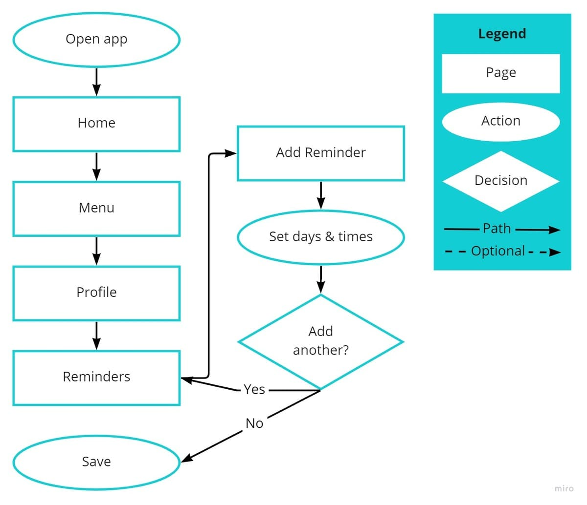
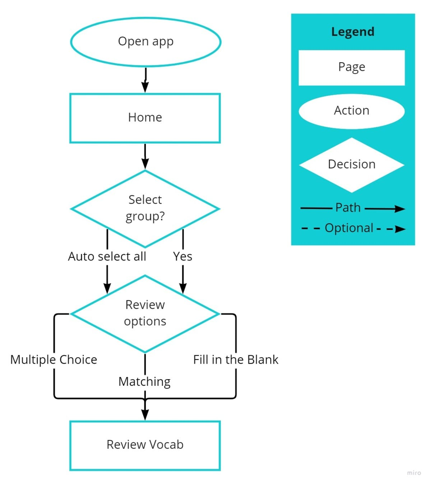
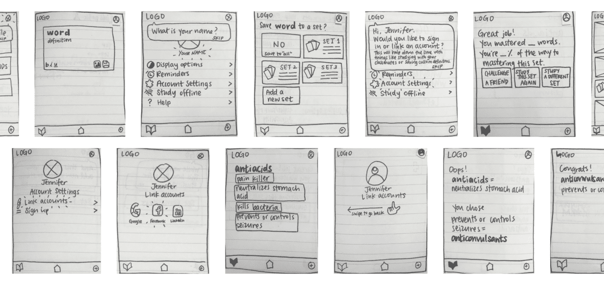
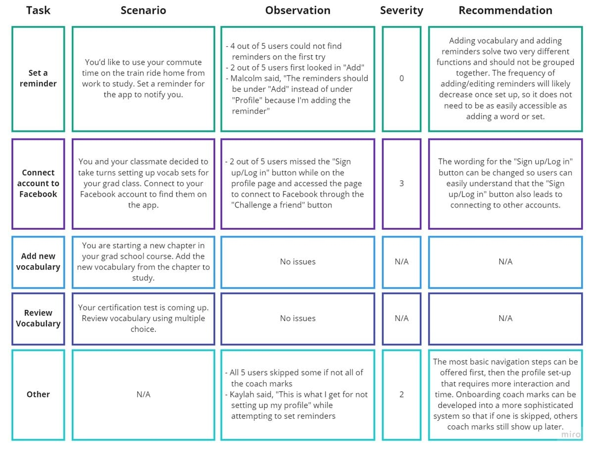

Objective: Design a mobile vocabulary learning app for people in their 20s and 30s to use in 5-10 minute increments on the go for a course or a new skill.
Background
Objective
Empower people to learn new vocabulary.
Problem Statement
How might we design a mobile app that empowers people to learn new vocabulary?
In order to understand the current market for vocabulary apps, I completed a competitive analysis of three apps. I focused on four topics for this analysis based on the functional requirements of the project - onboarding, menu, uploading and
reviewing vocabulary. The learnings from this analysis carried throughout the entirety of the project to the prototyping.
Quizlet
Pros
Onboarding: Builds credibility by including stats of benefits current users enjoy
Onboarding: Progressive onboarding process feels natural to users
Menu: Use of commonly recognized icons in top and bottom navigation bars
Uploading vocab: Auto-fill option is efficient
Uploading vocab: Allows users to organize new vocabulary into categories
Reviewing vocab: Many ways of learning vocab - flashcards, writing & matching, tests
Other: Offline studying option
Cons
Onboarding: Sign up/login required
Uploading vocab: Valuable features that set Quizlet apart (ex. Add photo to definition, take picture of text to auto-upload vocabulary) are only accessible through a paid subscription account
Word of the Day
Pros
Onboarding: Use of a progress bar
Onboarding: Builds credibility by including stats of benefits current users enjoy
Reviewing vocab: Use of notifications help users to see and learn vocabulary throughout their day
Other: “Challenge a Friend” feature allows social interaction through the app
Other: Customize to light or dark theme
Cons
Onboarding: Long onboarding process
Onboarding: Can be improved through streamlining graphics
Onboarding: Possibly frustrating because user cannot move back and forth to edit answers
Onboarding: Three advertisements for paid subscription version of the app feels pushy
Menu: Use of unique icons in top and bottom navigation bars makes app difficult to learn for first time users
Uploading vocab: Does not allow users to upload their own vocabulary
Reviewing vocab: Only one way to review vocab - read word and definition
Word Up
Pros
Onboarding: Does not require sign up/login right away
Reviewing vocab: Multiple definitions and culturally relevant context of words
Reviewing vocab: Test option to master vocabulary
Other: “Challenge a Friend” feature allows social interaction through the app
Other: Customize to light or dark theme
Other: Alarm/reminder available
Other: User can customize text size
Cons
Onboarding: Unclear and not linear process feels confusing
Onboarding: Lack of onboarding to learn the features of the app
Menu: Repetitive elements in the left menu and bottom navigation bar
Menu: Information architecture feels unintuitive and inefficient
Menu: One of the bottom nav icons leads to a whole page dedicated to paid subscription features - users without a paid subscription would avoid this tab entirely rather than gradually and naturally encountering ways a paid subscription
might enhance their experience
Uploading vocab: Does not allow users to upload their own vocabulary
Summary
The competitive analysis of Quizlet, Word of the Day and Word Up helped me discover strengths and weaknesses of potential competitors whilst allowing me to understand what types of features may be expected from users for a vocabulary
app.
Observe
User Interviews
Now that I had a better understanding of the market space, it was time to get to know potential users through interviews. I interviewed five individuals who fit the target demographic for the app - people in their 20s and 30s who
have recently engaged in educational activity that involved vocabulary learning.
Questions
What were some of the biggest challenges to achieve your purpose/goal for learning vocabulary?
What methods did you use to learn new vocabulary? Which methods did/did not work for you? Why/why not?
What kind of environment do you usually study in? How often was this true when you studied vocabulary?
How often did you dedicate time to study new vocabulary? How long did you study per session?
What was the most difficult about studying new vocabulary? What was the easiest?
Analysis
Users cited lack of time associated with balancing their studies while working full-time as the biggest challenge to their goal of learning vocabulary. So I found ways to make studying efficient and a habit (ex. copying a friend's
vocabulary set and setting reminders).
Users described a variety of ways they liked to study vocabulary: physical flashcards, studying with others, using apps, applying vocab to real life situations and more. Therefore, I knew it would be important to implement a variety
of study methods (ex. multiple choice, fill in the blank, matching) in my design.
Users described a variety of environments they usually studied: cafes, surrounded by others studying, with/without background noise/music, at a desk/bed. This helped me realize users need an app that can be used in many different
settings.
The 5 W's
Based on the objective, problem statement, competitive analysis and user interviews, I determined the 5 W's to help guide the project.
What? Vocabulary learning app
Why? For a course or a new skill
Who? People in their 20s and 30s
When? 5-10 minute increments
Where? On the go, in various settings
Takeaways
As a first time user researcher, I was grateful to be able to recruit friends to interview for this project. However, while reviewing the interview recordings, I noticed many ways I can improve as a researcher such as staying impartial,
embracing silences to encourage interviewees to elaborate and asking relevant follow up questions to gather deeper insights.
POV
User Personas
Now that I had a better understanding of real people who may use my vocabulary app, I created User Personas based on the interview analysis and summary.
“I was a great student in undergrad but am finding it much harder to dedicate time to studying and staying motivated with everything else going on in my life.”
Jenna Flores
Age: 27
Family status: Single, no kids
Work: Talent Recruiter (Full-time)
Education: Bachelor’s in Psychology, pursuing a Master’s in Nursing
Behaviors
Commutes to and from work on public transportation (about 45 minutes)
Connects with friends and family via social media on cell phone throughout the day
Studies at a desk in home office setting in the evenings after work
Makes flashcards to study vocabulary
Needs & Goals
Needs to incorporate real world contexts for new vocabulary to better understand and remember them
Wants to connect to classmates to study together and motivate each other
Wants to take advantage of smaller chunks of time throughout the day to study
Needs features that a physical deck of flashcards offers such as sorting and shuffling
User Stories
As a full time worker pursuing a master's, I want to be able to specify times for my reminders so that I study more often during my lunch breaks and commute.
As a Nursing student, I want to study with my classmates so that we keep each other motivated.
As a student, I want to write my own definition of words so that making the flashcards is a part of the studying process.
As a full time worker and part-time student, I want a quick way to sort flashcards into different piles so that I save time from reviewing words I already know.
Problem Statement
Jenna needs a way to study in different environments such as a breakroom where she needs to be quiet or a loud train during her commute because she has limited time for studying and needs to take advantage of small chunks of time
throughout the day. We will know this to be true when we see that Jenna is studying at various times of the day.
Hypothesis Statement
We believe that by providing multiple ways of reviewing vocabulary such as fill in the blank, multiple choice and matching pairs for Jenna, we will be able to accommodate the various environments and time constraints that Jenna has to
study in and therefore achieve an increase in speed for learning vocabulary.
Ideate
Task Analyses & User Flows
In the next portion of the Design Thinking Process “Ideate”, I created task analyses and user flows for two important tasks for my user persona Jenna.
Setting Study Reminder Notifications
Entry point: Open menu
Success criteria: Personalize reminder notification times
Open app
Open menu options
Open profile
Open profile settings
Open reminders
Add reminder
Specify time
Add additional reminder(s) (optional)
Save

Made using Miro
Reviewing Vocabulary Using Multiple Choice
Entry point: Select vocabulary words to review
Success criteria: Review vocabulary using multiple choice feature
Open app
Select group of vocabulary words to review (optional - default selects all)
Select multiple choice option
Review vocabulary

Made using Miro
Prototype
Wireframes & Prototype
At this point, I started the exciting process of wireframing the main features identified in the task analyses and user flows above. I created low-fidelity wireframes of StudyBuddy with its user persona and user flows in mind.

Takeaways
At the very beginning stages of wireframing, I found myself obsessing over details and element proportions. I had to consciously remind myself to embrace the trial and error mindset, knowing future iterations are inevitable. Through this
experience, I learned the importance of using pen and paper. With more advanced tools like Figma or Adobe XD, I would not be able to practice rapid prototyping and rather, get stuck in the ideation stage for far too long for a version of
the product that might not even hold up to usability testing.
Test
Usability Testing
In the final stage of this project, I conducted usability testing with four key user task scenarios on five participants.

Made using Miro
New Iteration
These changes were made based on the usability testing results
Linking to social accounts: language updated and process streamlined
Onboarding: added “Skip all” option (if selected, coach mark would show where to access “Help” if needed in the future)
Takeaways
Recording usability testing sessions During usability testing sessions, most participants seemed to navigate the prototype with ease, completing each task efficiently. However, upon review of the recordings, I found many instances
in which participants quickly clicked through wrong pages before landing on the correct one. I would have missed these instances if not for the recordings, helping me realize the importance of recordings to review or better yet, having a
second user researcher for future sessions.
Making research backed decisions While the major decisions and updates on the StudyBuddy app were based on user research, I made some smaller changes throughout iterations. While I know it's okay to make changes based on instinct,
I realized that if working on a team, it wouldn't hurt to make changes based on user.